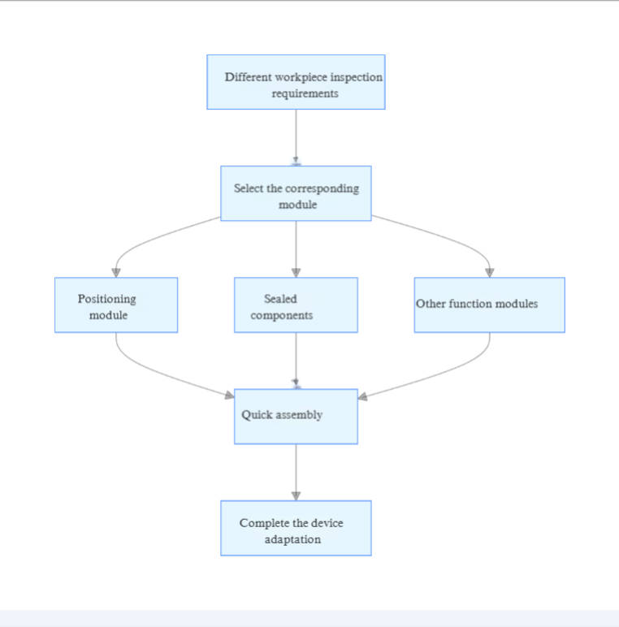

التصميم المبتكر لتجهيزات WAFU Brothers: كسر اختناقات كفاءة اختبار الإحكام وتعزيز الاستقرار
في عملية اختبار الإحكام، تعمل التجهيزات كـ "جسر" يربط بين معدات الاختبار وقطعة العمل قيد الفحص. مستوى تصميم التجهيز يحدد مباشرة كفاءة الاختبار واستقرار البيانات. من الإنتاج الضخم لأجزاء السيارات إلى الفحص الدقيق للأجهزة الطبية، غالبًا ما تعاني التجهيزات التقليدية من انحرافات في التمركز، وتثبيت مستهلك للوقت، وضعف التكيف، مما يؤدي إلى انخفاض كفاءة الاختبار وتقلبات كبيرة في البيانات. بالاعتماد على أكثر من عقد من الخبرة الصناعية، يركز WAFU Brothers على مفاهيم التصميم المبتكرة والتقنيات المتقدمة لتطوير سلسلة من تجهيزات اختبار الإحكام عالية الأداء التي تعالج بشكل جذري هذه المشكلات الصناعية، لتصبح قوة رئيسية في تحسين كفاءة الاختبار واستقراره.
تحديات التجهيزات التقليدية: قيود مزدوجة للكفاءة والدقة
تواجه التجهيزات التقليدية لاختبار الإحكام عادة ثلاث مشكلات رئيسية تحد بشكل كبير من كفاءة الإنتاج. أولاً، ضعف دقة التمركز يؤدي إلى انحرافات في الاختبار. بعض التجهيزات، بسبب عيوب التصميم الهيكلي، لا يمكنها تثبيت قطعة العمل بدقة، مما يسبب اكتشافًا غير دقيق لمسارات تسرب الغاز. وفقًا لتقرير "تقرير مراقبة جودة التصنيع العالمي 2023"، تصل نسبة الفشل الناتجة عن أخطاء تموضع التجهيزات إلى 18%. ثانيًا، عمليات التثبيت المعقدة: التعديل اليدوي للتجهيزات يستغرق وقتًا طويلًا، حيث تتجاوز مدة التثبيت 3 دقائق لكل قطعة، مما لا يلبي متطلبات الإنتاج على نطاق واسع. وأفادت شركة رائدة في صناعة قطع السيارات أنها فقدت حوالي 200 ساعة عمل فعالة شهريًا بسبب كفاءة التجهيزات التقليدية المنخفضة. ثالثًا، ضعف التكيف: غالبًا ما تُصمم التجهيزات التقليدية للاستخدام الفردي لكل آلة؛ مما يتطلب استبدالًا متكررًا لأحجام وأشكال مختلفة من قطع العمل، مما يزيد تكاليف المعدات ويقلل عمر التجهيز بسبب الفك والتركيب المتكرر. يوضح نظام إدارة الجودة ISO 9001:2015 التابع للمنظمة الدولية للتوحيد القياسي أن ضعف تكيف المعدات يؤثر بشكل كبير على استقرار الإنتاج واتساق المنتج.

التصميم المبتكر لـ WAFU Brothers: اختراقات متعددة الأبعاد للحواجز الصناعية
طور WAFU Brothers تجهيزات اختبار الإحكام التي توازن بين الكفاءة والاستقرار من خلال ثلاث تقنيات أساسية: الهيكل المعياري، نظام الضبط الذكي، وتحسين المواد.
التصميم المعياري: تكيف مرن لجميع السيناريوهات
تعتمد التجهيزات على هيكل معياري سريع الفك مع تصميم واجهات موحدة، مما يمكّن من الجمع الحر لمكونات التجهيز لمواصفات مختلفة. على سبيل المثال، بالنسبة لكتل محركات السيارات، وأغلفة الإلكترونيات الاستهلاكية، وأشكال قطع العمل المختلفة الأخرى، يكفي استبدال وحدات التموضع ومكونات الختم لإتمام تكيف المعدات، مما يقلل وقت التحويل إلى أقل من 30 ثانية. يقلل هذا التصميم بشكل كبير من تكاليف استثمار المعدات للشركات ويدعم الانتقالات السريعة لخطوط الإنتاج، مع تحسين مرونة الإنتاج بنسبة تزيد عن 40%. وفقًا لأبحاث نشرت في Journal of Mechanical Design and Manufacturing Engineering، يعزز التصميم المعياري فعالية استخدام المعدات وكفاءة الصيانة.

نظام الضبط الذكي: تموضع دقيق وتثبيت فعال
من خلال دمج محرك سيرفو كهربائي وتقنية استشعار الضغط بشكل مبتكر، يمكن للتجهيز التعرف تلقائيًا على أبعاد قطعة العمل وضبط قوة التثبيت. عند اختبار حزم بطاريات السيارات الجديدة، يستخدم النظام أجهزة استشعار مدمجة لمراقبة توزيع الضغط في الوقت الحقيقي، لضمان الالتصاق بنسبة 99.5% بين حلقة الختم وسطح قطعة العمل، مما يتجنب أخطاء الكشف الناتجة عن تشوه الضغط الزائد أو تسرب الضغط المنخفض. في الوقت نفسه، يتم تنفيذ عملية التثبيت الكهربائية تلقائيًا بواسطة نظام تحكم PLC، حيث يتم تقليص وقت تثبيت قطعة واحدة إلى 45 ثانية — أسرع بأكثر من 3 مرات مقارنة بالتجهيزات اليدوية التقليدية. وقد حصلت هذه التقنية على براءة اختراع من المكتب الوطني للملكية الفكرية.
| بند المقارنة | تجهيز يدوي تقليدي | تجهيز ذكي من WAFU Brothers |
|---|---|---|
| وقت تثبيت قطعة واحدة | ＞3 دقائق | 45 ثانية |
| نطاق خطأ التموضع | ±0.5 مم | ±0.02 مم |
| ضبط قوة التثبيت | يدوي | تلقائي |
| نطاق تقلب بيانات الكشف | ±0.5 كيلو باسكال | ±0.05 كيلو باسكال |
تحسين المواد والعمليات: ضمان الاستقرار طويل المدى
في اختيار المواد، يعتمد WAFU Brothers على مركب من ألومنيوم فضائي عالي القوة ومواد بلاستيكية هندسية خاصة، لضمان تجهيزات خفيفة الوزن (أخف بنسبة 60% من التجهيزات الفولاذية) مع مقاومة ممتازة للتآكل والاهتراء. يتم معالجة أسطح المكونات الرئيسية بطبقات نانوية، مما يمدد عمر الخدمة لأكثر من 8 سنوات. علاوة على ذلك، تستخدم مكونات الختم مواد سيليكون غذائية، معتمدة من FDA، لتلبية متطلبات النظافة العالية في الصناعات الطبية والغذائية، وضمان عدم وجود خطر تلوث أثناء الاختبار.
تم نشر نتائج اختبارات أداء المواد ذات الصلة في مجلة علوم وهندسة المواد.
فعالية التطبيق: معايير مثبتة عبر صناعات متعددة
تصنيع السيارات: تحسين كفاءة الإنتاج والمردود
بعد اعتماد تجهيزات WAFU Brothers، حسنت شركة سيارات رائدة كفاءة اختبار كتل المحركات بنسبة 60%، مما قلل دورة اختبار القطعة الواحدة من 8 إلى 3 دقائق. قلصت دقة التموضع العالية للتجهيز نطاق تقلب البيانات إلى ±0.05 كيلو باسكال، وزاد معدل إنتاج المنتج من 88% إلى 97%، موفرة أكثر من 5 ملايين يوان سنويًا في تكاليف إعادة العمل.
الأجهزة الطبية: تلبية متطلبات النظافة والدقة الصارمة
في اختبار الإحكام للحقن الطبية، نجحت تجهيزات WAFU Brothers المخصصة، التي تتميز بـ تصميم خالٍ من الغبار ودقة تموضع دون المليمتر، في اجتياز شهادة نظام إدارة جودة الأجهزة الطبية ISO 13485. يضمن المعايرة التلقائية للتجهيز خطأ تثبيت أقل من 0.02 مم في كل مرة، مما يساعد المؤسسة على تحقيق الامتثال الكامل لشهادة CE الأوروبية.
الإلكترونيات الاستهلاكية: مواجهة تحديات الحجم الصغير والدقة العالية
لاختبار مقاومة الماء للهواتف الذكية، طور WAFU Brothers تجهيز شفط بالفراغ باستخدام ضغط سلبي لتثبيت الأغطية الزجاجية المنحنية، متجنبًا الخدوش الناتجة عن طرق التثبيت التقليدية. بالاقتران مع معدات الاختبار الآلي، يصل الإنتاج إلى 1200 قطعة في الساعة مع معدل إنتاج 99.2%. فاز هذا الحل بـ جائزة الابتكار التكنولوجي من الجمعية الدولية للإلكترونيات الاستهلاكية.
آفاق المستقبل: الابتكار المدفوع بالذكاء والتخصيص
مع تطور الصناعة 4.0 والتصنيع الذكي، تتطور تجهيزات اختبار الإحكام نحو الذكاء والمرونة. سيواصل WAFU Brothers الاستثمار في البحث والتطوير، مع التخطيط لإطلاق تجهيزات الجيل التالي المدمجة مع التعرف البصري بالذكاء الاصطناعي ووظائف التشخيص الذاتي، مما يمكّن من التعرف التلقائي على قطعة العمل، وتطابق المعلمات الذكية، وتنبيه الأعطال. في الوقت نفسه، ستتعمق خدمات التخصيص، لتوفير دعم كامل من التصميم إلى الإنتاج الضخم للمجالات الناشئة مثل الطاقة الجديدة والفضاء، مستمرة في قيادة الابتكار في تقنية تجهيزات اختبار الإحكام.